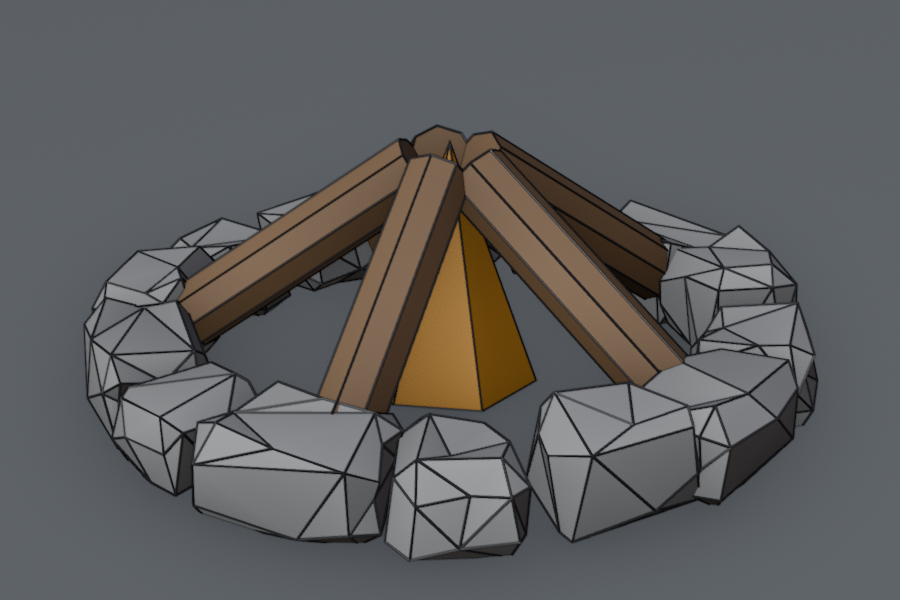
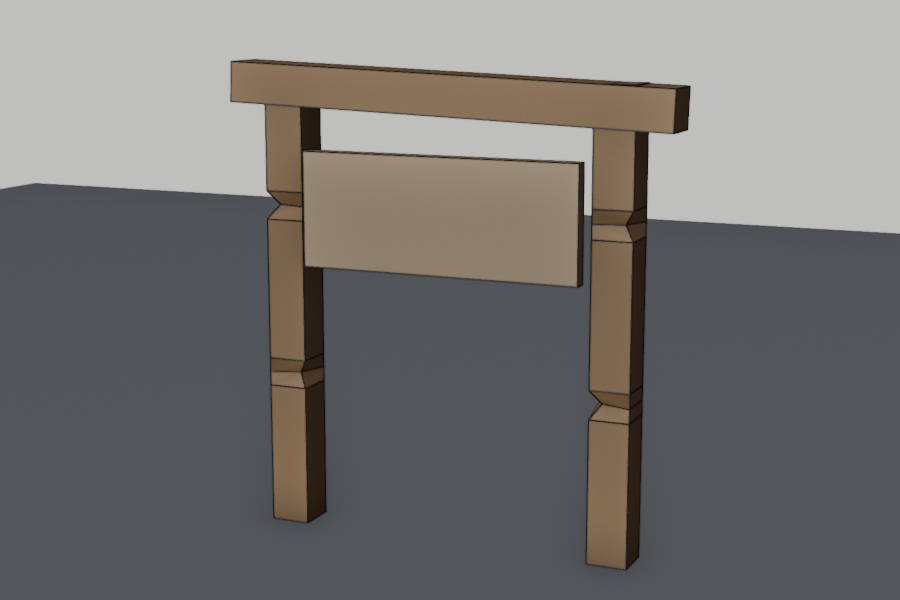
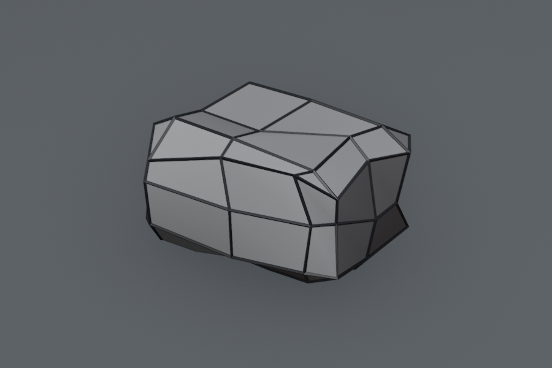
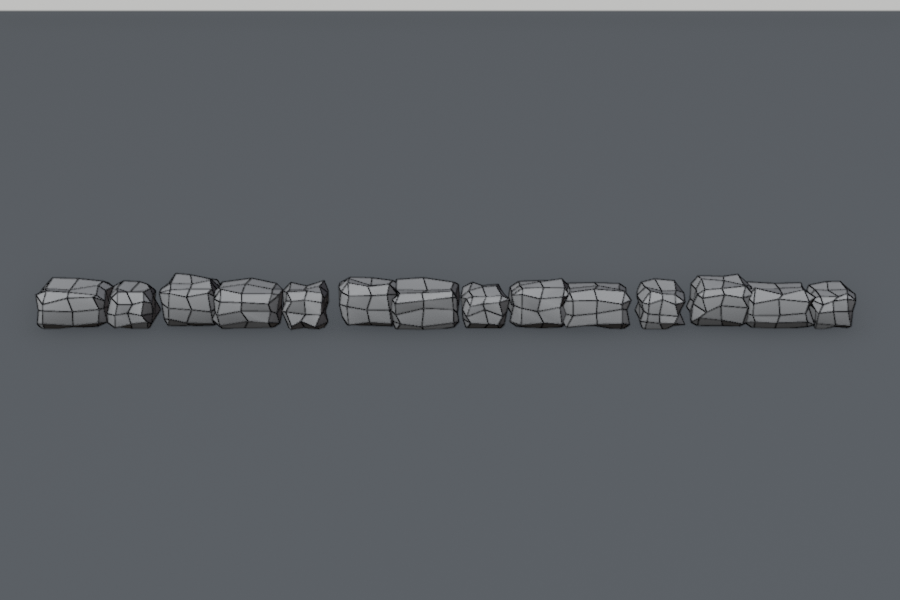
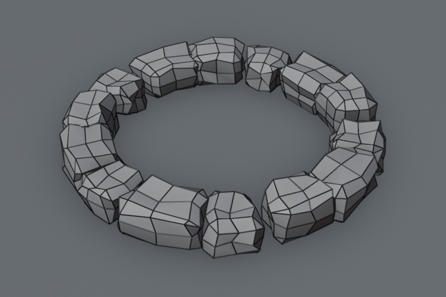
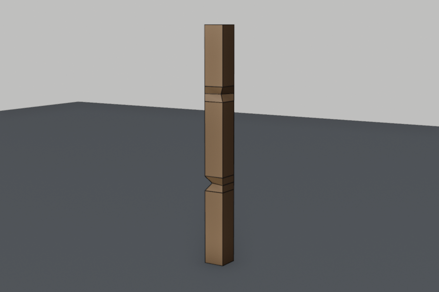
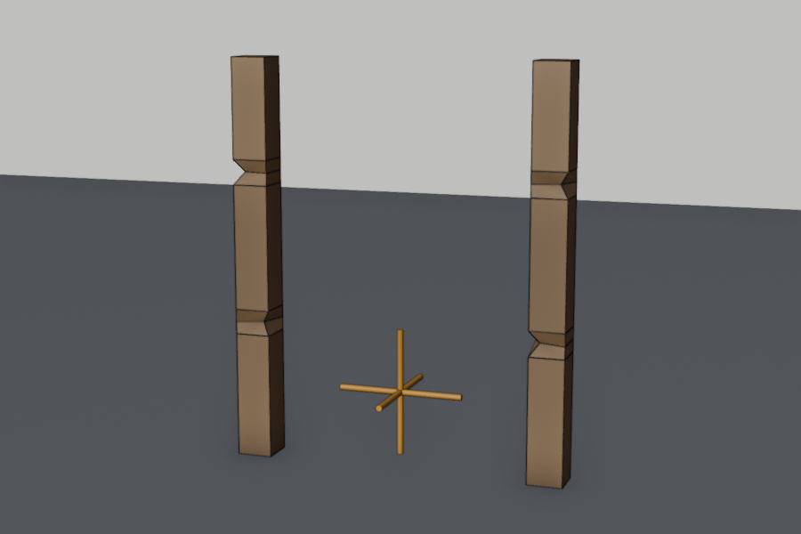

Lesson 13 · Blender track
The well's stones and frame
Grant's low-poly well, Parts 1–2, each followed by an exercise: a proper stone ring for your campfire, then a village sign.




Warm-up: from memory
From Lesson 12: you typed 5 m into Dimensions. What else changed, and what do you do next?
Show answer
The object's scale changed. Press Ctrl+A → Scale to bake it into the mesh. Grant makes the same point at the start of Part 1: always have scale at 1 before Edit Mode or modifiers.From Lesson 11: which pivot point rotates copies around a centre?
Show answer
3D Cursor, with the cursor at the centre. Grant uses it to rotate each ring of stones in Part 1.Session 1: Part 1, then the stone ring
Part 1: The stone base (15 min)
This video has no chapter list. I made the timings below from its captions, so they're approximate.
| Around | Watch for |
|---|---|
| 01:30 Scale, then apply | Non-uniform scale makes modifiers and bevels behave oddly. So: Ctrl+A → Scale before Edit Mode. Same rule as Lesson 12. |
| 02:30 Bevel (Ctrl+B) | All edges selected, bevel, and the cube becomes a chiselled stone. |
| 03:00–04:00 Loop cuts and Randomize | Mesh → Transform → Randomize. Keep the amount small: a bit wobbly, not melted. |
| 04:30 Ctrl+X dissolve edges | Dissolve removes edges but keeps the faces. X → Edges deletes the faces around them too. |
| 05:30 X-ray to select the back | The Lesson 11 skill again. |
| 08:00 Spares collection | Duplicate the originals into a hidden “Spares” collection before a destructive step like Join. A habit worth stealing. |
| 09:30–11:30 Join, then Simple Deform → Bend | Key idea. A straight line of stones along X, bent 360° around Z, becomes a ring. It only works if the line runs along X with its rotation applied. |
| 11:30–13:30 More rings | Duplicate, rotate around the 3D cursor, scale. Pivot point again. |
| 14:00 Decimate, copy modifiers | Decimate removes faces for extra jaggedness. Ctrl+L → Copy Modifiers copies from the active object, like Link Materials in Lesson 12. |
Grant uses the numpad for views. Without one: View → Viewpoint → Front. He places the 3D cursor with Shift+RMB, which needs no numpad.
Exercise A: a stone ring for your campfire
Practises the whole Part 1 technique on your own prop. Open blender/campfire.blend. The stone ring goes where the eight ico-sphere stones were, at a radius of about 0.55 m.






- Grant's habit: make a
Sparescollection (M → New Collection), move the old ico-sphere stones into it, and hide it with the eye icon in the Outliner. - One stone away from the fire: Shift+RMB to put the 3D cursor on empty ground, then Shift+A → Cube. Make it about 28 × 20 × 16 cm (Dimensions, as in Lesson 12), then Ctrl+A → Scale. In Edit Mode: bevel all edges with Ctrl+B (a few cm), add three loop cuts, then Mesh → Transform → Randomize. These stones are smaller than Grant's, so start with a small amount (around
0.01–0.02) and raise it until they look chiselled. - A line along X: Shift+D X to copy stones side by side, overlapping slightly. Vary two or three of them in Edit Mode, as Grant does (shorter, taller, a loop removed with Ctrl+X). Keep going until the line is about 3.5 m long. Why 3.5? Work it out: what length of line wraps into a circle of radius 0.55 m?
- Copy the whole line into
Spares(the originals). Then select the line, Shift-click the stone at the start of it so it's active, and Ctrl+J. - Modifiers → Add Modifier → Deform → Simple Deform: Bend, axis Z, angle 360°. The line closes into a ring.
- The ring forms beside the object's origin, not around it. Move it with G until it surrounds the fire (check in top view). Then add Decimate (ratio about 0.5) for jagged stones. Save.
Answer to step 3: why 3.5 m?
Show answer
The line becomes the ring's circumference: 2π × 0.55 ≈ 3.46 m. Make it longer and the ring gets bigger. In my test, a 3.46 m line bent 360° gave a ring about 1.1 m across, so radius 0.55 ✔.Session 2: Part 2, then the village sign
Part 2: The wooden frame (17 min)
| Around | Watch for |
|---|---|
| 00:30–02:00 First beam | X-ray, face mode, pull the top up. Then he switches the pivot back from 3D Cursor to Median Point before rotating, because Part 1 left it on the cursor. Watch for that. |
| 02:00 Notches | Key idea. Ctrl+Shift+B bevels a vertex, J joins two vertices with an edge, and GG slides a vertex along its edge. Together they make a “bashed wood” notch. |
| 03:00 Quads vs n-gons | Loop cuts only pass through four-sided faces. N-gons still work in a game engine, but they limit further modelling. |
| 03:30 Knife (K) | Cut your own edges where a loop cut can't go. |
| 06:30 Varying a copy | Rotate a duplicate 180° and it looks like a different beam. |
| 07:30 Challenge | Try the struts and top beam before watching. |
| 12:00 Unapplied scale | A bevel stretched further one way than the other is the symptom of unapplied scale. |
| 13:00–16:30 Mirror across an Empty | An Empty is an invisible helper object. Used as the Mirror Object, it sets the mirror line instead of the object's own origin. That's the fix for the Lesson 10 “where's my mirror?” problem. |
Exercise B: a village sign
Practises notches, the Empty as mirror object, and Dimensions plus Apply. Target: two posts 1.2 m apart, 1.6 m tall, a top beam and a sign board. Save it as blender/village_sign.blend.




- Post: a cube with Dimensions 14 × 14 × 160 cm, then Ctrl+A → Scale. Move it to X 0.6, with its bottom on the ground (Z 0.8). Wood material.
- Two notches, Grant's way: a loop cut where you want one, select a corner vertex on it, Ctrl+Shift+B a little, J the two new vertices, then GG to slide. One near the top, one lower on a different corner.
- Mirror across an Empty: Cursor to World Origin, Shift+A → Empty → Plain Axes, name it
MirrorEmpty. On the post: Mirror modifier, Mirror Object =MirrorEmpty. The second post appears at X −0.6. Test it: move the Empty along X and watch the copy follow, then Ctrl+Z. - Top beam: 160 × 16 × 14 cm at Z 1.55, resting on both posts. Tilt it a degree or two (R Y
2) and give it one notch, for character. - Board: 100 × 5 × 40 cm at about Z 1.15, just in front of the posts, with a second, lighter
Plankmaterial. Save.
Predict: in step 3, why not just add the Mirror modifier without an Empty?
Show answer
The post's origin sits in its own middle (X 0.6), so it would mirror onto itself and nothing visible would happen. That's exactly what Grant shows at 13:00. The Empty puts the mirror line at X 0, without moving the post's origin.Taking these into Godot, as you did with the other props? Join the sign's parts, or select them all, and tick Apply Modifiers so the mirrored post comes along (Lesson 10). The ring's Simple Deform and Decimate also need Apply Modifiers.
All pictures were rendered from a Blender 5.2.2 script that follows these steps. The notches in the pictures are approximate: yours will be shaped by hand.
Recall: after both sessions
Your line of stones bends into a twisted mess instead of a ring. Most likely cause?
Ctrl+X versus X → Edges on an edge loop: the difference?
Why does Grant copy the stones into a hidden Spares collection before joining?
What does an Empty add when used as the Mirror Object?
For next session (spaced recall)
- The four steps from a single stone to a ring, and the one rule Simple Deform depends on.
- How to make a notch: three shortcuts, in order.
- From Lesson 12: Alt+D vs Shift+D.
Next: Lesson 14, the well's Parts 3–5 (roof tiles, winch and rope, and the finish). Then Lesson 15 is back in Godot with the finished well.
Ring twisting instead of bending, a notch that won't join, or a menu that differs from Grant's 4.2? Tell me the step and what you see.